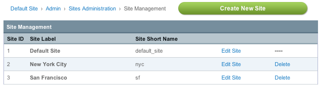
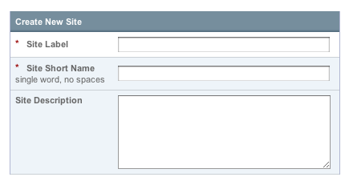
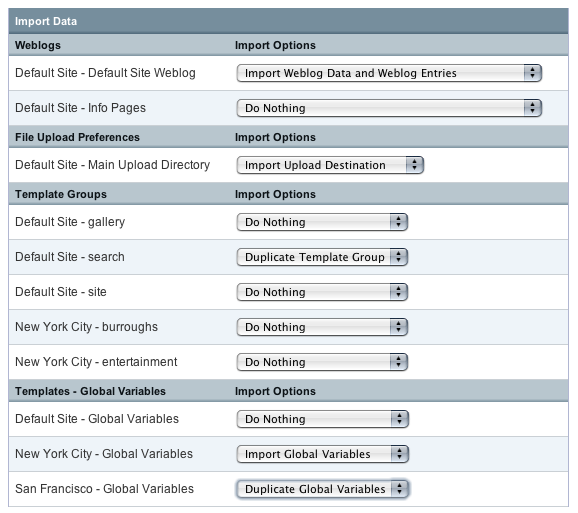

Creating a New Site
Note: Make a backup of your database before working with the Multiple Site Manager.
Step 1
Select Edit Sites from the Sites Tab and then Create New Site.

When a new Site is created it will copy the preferences of the currently selected Site. Preferences refer to the configurable options found in:
- Members and Groups
- Specialty Templates
- System Preferences
- Weblog Administration
For example, if you have Site A and Site B and want the new Site C to use the preferences from Site B, make sure you are using Site B when creating Site C. See?
Step 2
Enter the following:
- Site Label: How your Site will appear in the Control Panel.
- Site Short Name: This will be used in any code-based references to your Site.
- Site Description: Exactly what you would expect.

These options can be changed at any time.
Import Options
Import options are only available when creating a new Site. They are not available when Editing a Site's information.
Note: Importing Weblogs, File Upload Preferences, Template Groups, and Template Global Variables cannot be undone. If you carelessly disregarded the earlier warning, make a backup of your database before continuing.
When creating a new Site you can choose to Import or Duplicate existing Weblog data, File Upload Preferences, Template Groups, and Template Global Variables to the new Site. Please note that if you import or duplicate weblog entries you'll need to Recount the Statistics in the Site afterwards.
Importing will move the data from its current site to the new Site. For example, if you import a Weblog from Site A to Site B, it will no longer be listed in Site A.
Duplicating comes with two options. You can choose to duplicate only the preferences. Or you can choose to duplicate the preferences and the data. Please read each option carefully as there is some variance between the Duplicate options based on what you wish to duplicate. Duplicating is a good choice when you need to create a new Site based on existing content while keeping the current Site live.
Click Submit to create your new Site.
Note: Since multiple weblogs can use the same category, custom weblog field, and status groups, whenever a weblog is imported or duplicated the groups assigned to the weblog are duplicated in the new site and are NOT imported. This means the groups will still remain at the old site so other, non-imported weblogs are not affected but the imported or duplicated weblogs have new groups created and all data is reassigned to use those groups correctly.

Step 3
Your new Site is now created and ready for use. Configure your Site through the Control Panel like you would any ExpressionEngine installation. It is recommended that you start by updating the following:
- Admin --> System Preferences: Update the System Preferences to match the URL you will be using for the new Site.
- Templates --> Template Groups --> Edit Group: You'll want to select a Template Group and edit the group preferences to set the Template Group's index page as the Site's home page.
Updating these preferences first will get you ready to setup any domains or sub-domains as necessary.
Step 4
Set up public access via a sub-folder, sub-domain, or domain.
Optional Steps
- Setup domains and sub-domains
- To add Site specific Control Panel logins use the Masking Control Panel Access instructions.